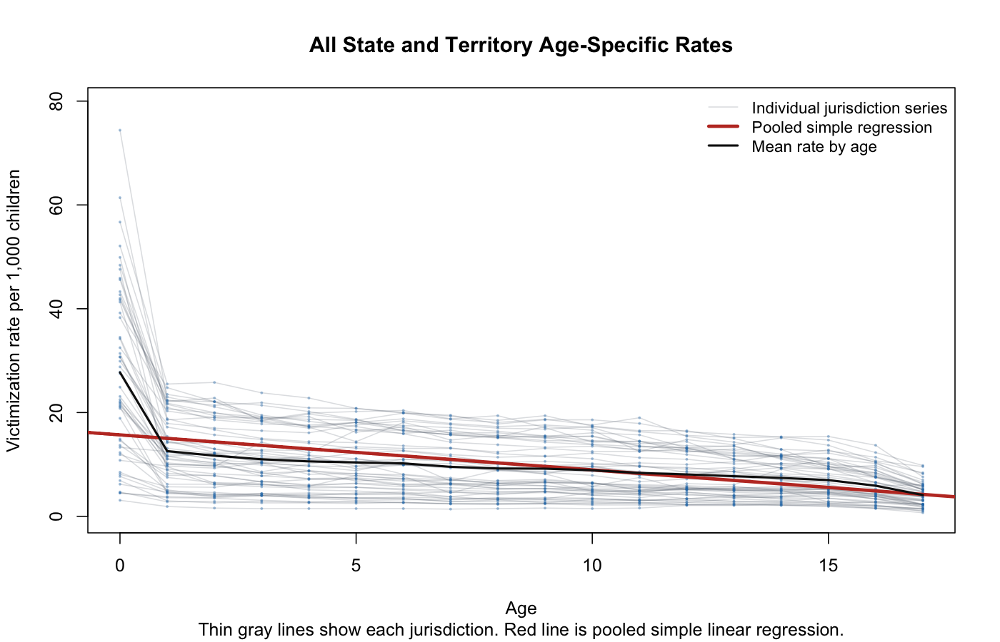
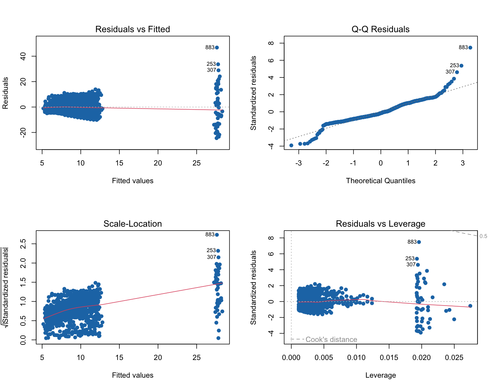

01 / PUBLIC POLICY / SPRING 2026
Where age changes
the story.
Examining how reported child maltreatment rates vary across ages and U.S. jurisdictions.
R · Multiple linear regression · Data visualization
01 / THE QUESTION
Does one age trend
tell the whole story?
The project examines how reported victimization rates vary from infancy through age 17. A downward age trend is visible, but the unusually high infant rate raises a second question: should infancy be modeled as a distinct category?
Ding Ma and Pauli Wang · ECON-210A-1 · Brandeis University · Spring 2026. The supplied final report credits both authors.
02 / DATA & APPROACH
Compare rates.
Keep the context.
The supplied data contains age-specific reported victims per 1,000 children. National and reporting-state summary rows are excluded, leaving 52 jurisdictions, including D.C. and Puerto Rico, observed across 18 age categories.
The analysis combines those rates with 2019 ACS household measures. Its final pooled regression includes age, an infant indicator, and the share of married-couple family households with a householder aged 15–34.
03 / WHAT EMERGED
Infancy stands apart.
 Enlarge ↗
Enlarge ↗The mean reported infant rate is approximately 27.7 per 1,000 children. In the final model, infancy is associated with an additional 15.099 reported victims per 1,000, controlling for age and the household measure.
Age coefficient
Each additional year is associated with a lower reported rate, holding the other included variables constant.
Household measure
The younger married-couple share does not show a statistically significant independent association in this specification.


Enlarge ↗A single age slope misses an important feature. Treating infancy separately captures a distinct pattern in the reported rates.
04 / LIMITS & NEXT STEPS
The model is a starting point.
The study describes associations. It does not establish that age or household composition causes a change in underlying maltreatment prevalence.
- The reporting year is inferred as 2019 from a federal-table match; the local source file has no explicit year metadata.
- Each jurisdiction contributes repeated age observations. The pooled OLS model does not fully address within-jurisdiction dependence.
- Diagnostic plots show non-normal residuals and uneven error variance. Reported conventional inference needs caution.
- Reporting and screening practices differ, and the household measure describes the householder’s age rather than the ages of both spouses.


Enlarge ↗The practical implication is to investigate age-specific patterns more carefully, especially infancy, before making decisions. The study itself does not evaluate an intervention.
05 / DATA SOURCES
Data behind the study.
The project combines reported child victimization rates by age with 2019 ACS household measures. The age-profile chart summarizes the final merged dataset; the other figures come from the final coursework report. The reporting year is inferred as 2019, as explained in the limitations.